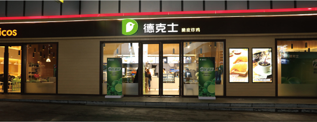

4月乍暖还寒之时，在德克士国家会展中心店，举办了一场别开生面的柠檬饮新品发布会。店内充满清新气息的装饰和布置，完美诠释此次发布会“柠好，新鲜”的主题，让每一位莅临现场的嘉宾和媒体朋友都感受到了浓浓春意。现场盛情邀请了柠檬产地的台农朋友们，见证源于他们辛勤劳作成果的柠檬饮品。
德克士副执行长邵信谋向现场嘉宾介绍了德克士一路走来的品牌故事，以及两款柠檬新品——纤绿柠檬饮和蜂蜜爱玉柠檬饮，揭示了柠檬饮让人欲罢不能背后的神奇魔力。因为去年的柠檬饮销售可观，受到消费者喜爱，今年德克士也继续研发柠檬新品，为消费者带来舒食均衡的消费体验。
到底是怎样神奇的柠檬，才能造就如此口味不凡？台农代表上台介绍了这颗不平凡的台湾屏东绿柠檬种植背后的感人故事，一颗颗绿柠檬也凝结着台农的心血和多年种植的宝贵心得体会。
伴随鲜萃柠檬饮系列产品的开发力度不断加大，后续台湾柠檬的采购数字也将非常惊人。金色大地总经理吕政璋上台，向大家分享了把100%台湾柠檬原汁引进到内地的前后历程
在新品试吃环节，嘉宾们品尝着炸鸡配柠檬饮的美味舒爽，感受当下这“天生一对”无法抗拒的魅力！
